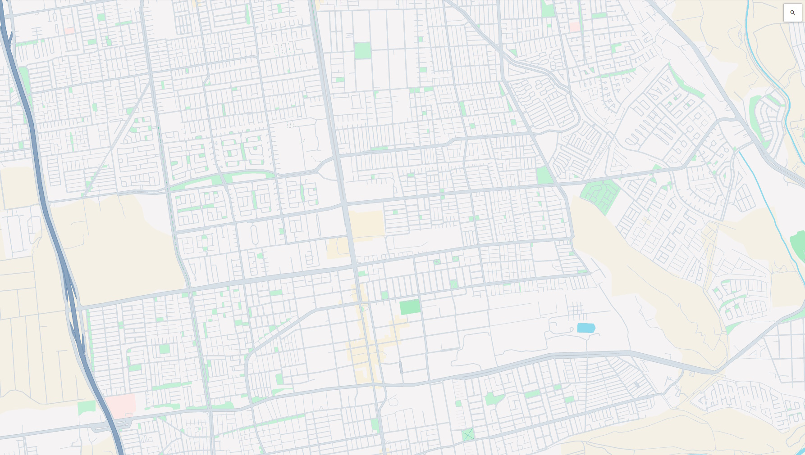

<!-- Menú lateral -->
<ion-menu contentId="main-content">
  <ion-header>
    <ion-toolbar>
      <ion-title>Ajustes</ion-title>
    </ion-toolbar>
  </ion-header>

  <ion-content>
    <ion-list lines="none">
      <ion-item>
        <ion-router-link routerLink="/home/perfil">
          <ion-icon name="person-circle-outline"></ion-icon> Perfil
        </ion-router-link>
      </ion-item>
      <ion-item>
        <ion-router-link routerLink="/home/historial">
          <ion-icon name="calendar-outline"></ion-icon> Historial
        </ion-router-link>
      </ion-item>
      <div *ngIf="usuarioTipo()">
        <ion-item>
          <ion-router-link routerLink="/home/administrar">
            <ion-icon name="key-outline"></ion-icon> Administrar
          </ion-router-link>
        </ion-item>
      </div>
      <ion-item>
        <a href="#" style="text-decoration: none;">
          <ion-icon name="close-outline"></ion-icon> Cerrar sesión
        </a>
      </ion-item>
    </ion-list>
  </ion-content>
</ion-menu>

<!-- Página principal -->
<div class="ion-page" id="main-content">
  <ion-header>
    <ion-toolbar>
      <ion-buttons slot="start">
        <ion-menu-button></ion-menu-button>
      </ion-buttons>
      <ion-buttons slot="end">
        <ion-button [routerLink]="['/home']">
          
        </ion-button>
      </ion-buttons>
    </ion-toolbar>
  </ion-header>

  <ion-content>
    
  </ion-content>

  <ion-tabs>
    <ion-tab-bar slot="bottom">
      <ion-tab-button tab="viaje">
        <ion-icon name="car-outline"></ion-icon>
        <ion-label>Viajes</ion-label>
      </ion-tab-button>
    </ion-tab-bar>
  </ion-tabs>
</div>